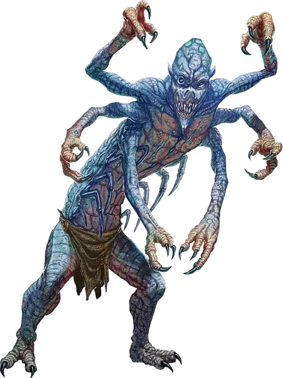

Кромсатель звёздных порождений
Star Spawn Mangler
Средняя Аберрация, хаотично-злая

Класс Доспеха 14
Хиты 71 (13к8 + 13)
Скорость 40 футов, лазая 40 футов
| мод | спас | ||
|---|---|---|---|
| СИЛ | 8 | −1 | −1 |
| ЛОВ | 18 | +4 | +7 |
| ТЕЛ | 12 | +1 | +4 |
| мод | спас | ||
|---|---|---|---|
| ИНТ | 11 | +0 | +0 |
| МДР | 12 | +1 | +1 |
| ХАР | 7 | −2 | −2 |
Навыки Скрытность +7
Сопротивление урону холод
Иммунитет к урону психическая энергия
Иммунитет к состояниям сбивание с ног, очарование, испуг
Чувства тёмное зрение 60 футов, пассивное Восприятие 11
Языки Глубинная речь
Опасность 5 (1800 опыта)
Бонус мастерства +3
Особенности
Устроить засаду. В первом раунде каждого боя Кромсатель совершает с преимуществом броски атаки против существ, которые ещё не начинали свой ход.
Скрытность в тени. В тусклом свете или во тьме Кромсатель бонусным действием может совершать действие Засада.
Действия
Мультиатака. Кромсатель совершает две атаки Когтём.
Когти. Рукопашная атака оружием: +7 к попаданию, досягаемость 5 фт., одна цель. Попадание: 8 (1к8 + 4) рубящего урона.
Если броски атаки были совершены с преимуществом, то цель получает дополнительных 7 (2к6) урона психической энергией.
Шквал когтей (перезарядка 4-6). Кромсатель совершает шесть атак по одной цели. До, во время, или после этих атак он может двигаться с собственной скоростью бонусным действием без провоцирования атак.
Описание
Материальный план представляет только небольшой кусочек мультивселенной. За пределами хорошо изученных планов существования лежат измерения, что смертельно опасны для смертных. Некоторые настолько враждебны, что даже мгновенного контакта с таким местом достаточно, чтобы свести смертного с ума. Но есть существа, для которых подобные измерения являются родными: существа, что вечно голодают, ищут, завывают, а иногда ещё и видят сновидения. Эти Древние старше всех прочих смертных рас и всегда внушают ужас разумным гуманоидам.
Однако каким сильным не было желание вторгнуться и захватить Материальный План, Древние не могут или не хотят покидать свои измерения. Одни заточены в своих измерениях внешними силами, некоторые неразрывно связаны со своими домашними реальностями, а другие просто не могут найти даже подобие выхода из собственного измерения.
Предвестники рока. Существа известные как порождения звёзд – это предвестники, рядовые солдаты, или лейтенанты Древних, способные принимать форму гуманоида, что может путешествовать по Материальному Плану. Чаще всего они пребывает следом за кометой... или, возможно, этот феномен предупреждает о том, что поблизости есть порождение звёзд, и оно доступно для общения. Если знамения верны, то колдуны и культисты спешат собраться вместе, читают вслух пренебрежительные слова и проводят безумные ритуалы, что направляют на верный путь пылающее порождение звёзд в этот мир.
Кромсатель звёздных порождений. Кромсатель – низкорослая, ползучая мерзость с несколькими длинными руками. Обычно у него имеется по шесть конечностей, но каждый кромсатель может иметь от четырёх до восьми. Кромсатели ползают по земле или стенам, скрываясь в тени, умудряясь укрываться от мест, что слишком малы или светлы для того, чтобы служить укрытием. Они кажутся значительно меньше, чем на самом деле, из-за своей сгорбленности и истощённого телосложения. Культисты призывают таких существ, чтобы те служили им в качестве надзирателей и наёмных убийц – задачи, с которыми они отлично справляются.